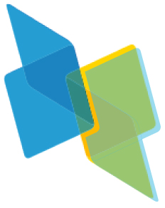
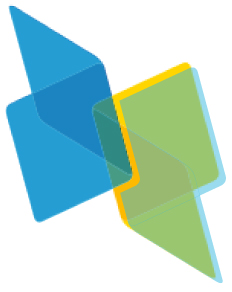

Thibault Dardinier
Visiting Research Fellow, National University of SingaporeIncoming Assistant Professor (Fall 2026), New York University
firstname.lastname@inf.ethz.ch


 



Publications Talks Education Awards Internships Supervision Teaching Service Other
I am currently a visiting research fellow at NUS, working with Ilya Sergey. I recently got my PhD from ETH Zurich, advised by Peter Müller.
I will join NYU's Courant Institute as an Assistant Professor of Computer Science in Fall 2026, as part of the Analysis of Computer Systems group. I am planning to hire two PhD students starting in September 2026. If you are interested, please read this and apply here (and mention my name in your statement of purpose).
The goal of my research is to build provably sound deductive verifiers with state-of-the-art automation for correctness, security, and privacy properties. To achieve this, my research addresses both theoretical and practical aspects, ranging from developing machine-checked (using the Isabelle proof assistant) program logics (e.g., Hyper Hoare Logic, CommCSL) and formal foundations (e.g., for translational verifiers based on separation logic, magic wands, fractional resources, verification-preserving inlining) to building novel automated verifiers (e.g., Hypra).
During my PhD, I completed an internship at Microsoft Research. Before my PhD, I graduated from ETH Zurich (as part of the Direct Doctorate program) and from École Polytechnique in France, and completed internships at SRI International, Siemens, and the Ministry of Defense (France).
Publications
Conference
PulseCore: An Impredicative Concurrent Separation Logic for Dependently Typed Programs
Gabriel Ebner, Guido Martínez, Aseem Rastogi, Thibault Dardinier, Megan Frisella, Tahina Ramananandro, Nikhil SwamyACM SIGPLAN International Conference on Programming Language Design and Implementation
[Abstract] [PDF] [Publisher] [Artifact]
PulseCore is a new program logic suitable for intrinsic proofs of higher-order, stateful, concurrent, dependently typed programs. It provides many of the features of a modern, concurrent separation logic, including dynamically allocated impredicative invariants, higher-order ghost state, step-indexing with later credits, and support for user-defined ghost state constructions. PulseCore is developed foundationally within the F★ programming language with fully mechanized proofs, and is applicable to F★ programs itself. To evaluate our work, we use Pulse, a surface language within F★ for PulseCore, to develop a range of program proofs. Illustrating its suitability for proving higher-order concurrent programs, we present a verified library for task pools in the style of OCaml5, together with some verified task-parallel programs. Next, we present various data structures and synchronization primitives, including a barrier that requires the use of higher-order ghost state. Finally, we present a verified implementation of the DICE Protection Environment, an industry standard secure boot protocol. Taken together, our evaluation consists of more than 31,000 lines of verified code in a range of settings, providing evidence that PulseCore is both highly expressive as well as practical for a variety of program proof applications.
Formal Foundations for Translational Separation Logic Verifiers
Thibault Dardinier, Michael Sammler, Gaurav Parthasarathy, Alexander J. Summers, Peter MüllerACM SIGPLAN Symposium on Principles of Programming Languages
[Abstract] [PDF] [Publisher] [Slides] [Extended version] [Artifact]
Program verification tools are often implemented as front-end translations of an input program into an intermediate verification language (IVL) such as Boogie, GIL, Viper, or Why3. The resulting IVL program is then verified using an existing back-end verifier. A soundness proof for such a translational verifier needs to relate the input program and verification logic to the semantics of the IVL, which in turn needs to be connected with the verification logic implemented in the back-end verifiers. Performing such proofs is challenging due to the large semantic gap between the input and output programs and logics, especially for complex verification logics such as separation logic. This paper presents a formal framework for reasoning about translational separation logic verifiers. At its center is a generic core IVL that captures the essence of different separation logics. We define its operational semantics and formally connect it to two different back-end verifiers, which use symbolic execution and verification condition generation, resp. Crucially, this semantics uses angelic non-determinism to enable the application of different proof search algorithms and heuristics in the back-end verifiers. An axiomatic semantics for the core IVL simplifies reasoning about the front-end translation by performing essential proof steps once and for all in the equivalence proof with the operational semantics rather than for each concrete front-end translation. We illustrate the usefulness of our formal framework by instantiating our core IVL with elements of Viper and connecting it to two Viper back-ends as well as a front-end for concurrent separation logic. All our technical results have been formalized in Isabelle/HOL, including the core IVL and its semantics, the semantics of two back-ends for a subset of Viper, and all proofs.
Hypra: A Deductive Program Verifier for Hyper Hoare Logic
Thibault Dardinier*, Anqi Li*, Peter MüllerACM SIGPLAN International Conference on Object-Oriented Programming, Systems, Languages, and Applications
[Abstract] [PDF] [Publisher] [Slides (from Anqi)] [Artifact]
Hyperproperties relate multiple executions of a program and are useful to express common correctness properties (such as determinism) and security properties (such as non-interference). While there are a number of powerful program logics for the deductive verification of hyperproperties, their automation falls behind. Most existing deductive verification tools are limited to safety properties, but cannot reason about the existence of executions, for instance, to prove the violation of a safety property. Others support more flexible hyperproperties such as generalized non-interference, but have limitations in terms of the programs and proof structures they support. In this paper, we present the first deductive verification technique for arbitrary hyperproperties over multiple executions of the same program. Our technique automates the generation of verification conditions for Hyper Hoare Logic. Our key insight is that arbitrary hyperproperties and the corresponding proof rules can be encoded into a standard intermediate verification language by representing sets of states of the input program explicitly in the states of the intermediate program. Verification is then automated using an existing SMT-based verifier for the intermediate language. We implement our technique in a tool called Hypra and demonstrate that it can reliably verify complex hyperproperties.
Hyper Hoare Logic: (Dis-)Proving Program Hyperproperties
Thibault Dardinier, Peter MüllerACM SIGPLAN International Conference on Programming Language Design and Implementation
[Abstract] [PDF] [Publisher] [Slides] [Extended version] [Artifact] [Archive of Formal Proofs]
Hoare logics are proof systems that allow one to formally establish properties of computer programs. Traditional Hoare logics prove properties of individual program executions (so-called trace properties, such as functional correctness). Hoare logic has been generalized to prove also properties of multiple executions of a program (so-called hyperproperties, such as determinism or non-interference). These program logics prove the absence of (bad combinations of) executions. On the other hand, program logics similar to Hoare logic have been proposed to disprove program properties (e.g., Incorrectness Logic), by proving the existence of (bad combinations of) executions. All of these logics have in common that they specify program properties using assertions over a fixed number of states, for instance, a single pre- and post-state for functional properties or pairs of pre- and post-states for non-interference. In this paper, we present Hyper Hoare Logic, a generalization of Hoare logic that lifts assertions to properties of arbitrary sets of states. The resulting logic is simple yet expressive: its judgments can express arbitrary trace- and hyperproperties over the terminating executions of a program. By allowing assertions to reason about sets of states, Hyper Hoare Logic can reason about both the absence and the existence of (combinations of) executions, and, thereby, supports both proving and disproving program (hyper-)properties within the same logic, including (hyper-)properties that no existing Hoare logic can express. We prove that Hyper Hoare Logic is sound and complete, and demonstrate that it captures important proof principles naturally. All our technical results have been proved in Isabelle/HOL.
Towards Trustworthy Automated Program Verifiers: Formally Validating Translations into an Intermediate Verification Language
Gaurav Parthasarathy, Thibault Dardinier, Benjamin Bonneau, Peter Müller, Alexander J. SummersACM SIGPLAN International Conference on Programming Language Design and Implementation
[Abstract] [PDF] [Publisher] [Extended version] [Artifact]
Automated program verifiers are typically implemented using an intermediate verification language (IVL), such as Boogie or Why3. A verifier front-end translates the input program and specification into an IVL program, while the back-end generates proof obligations for the IVL program and employs an SMT solver to discharge them. Soundness of such verifiers therefore requires that the front-end translation faithfully captures the semantics of the input program and specification in the IVL program, and that the back-end reports success only if the IVL program is actually correct. For a verification tool to be trustworthy, these soundness conditions must be satisfied by its actual implementation, not just the program logic it uses. In this paper, we present a novel validation methodology that provides formal soundness guarantees for front-end implementations. For each successful run of the verifier, we automatically generate a proof in Isabelle showing that the correctness of the produced IVL program implies the correctness of the input program. This proof can be checked independently from the verifier in Isabelle and can be combined with existing work on validating back-ends to obtain an end-to-end soundness guarantee. Our methodology based on forward simulation employs several modularisation strategies to handle the large semantic gap between the input language and the IVL, as well as the intricacies of practical, optimised translations. We present our methodology for the widely-used Viper and Boogie languages. Our evaluation demonstrates that it is effective in validating the translations performed by the existing Viper implementation.
CommCSL: Proving Information Flow Security for Concurrent Programs using Abstract Commutativity
Marco Eilers, Thibault Dardinier, Peter MüllerACM SIGPLAN International Conference on Programming Language Design and Implementation
[Abstract] [PDF] [Publisher] [Extended version] [Artifact] [Archive of Formal Proofs]
Information flow security ensures that the secret data manipulated by a program does not influence its observable output. Proving information flow security is especially challenging for concurrent programs, where operations on secret data may influence the execution time of a thread and, thereby, the interleaving between different threads. Such internal timing channels may affect the observable outcome of a program even if an attacker does not observe execution times. Existing verification techniques for information flow security in concurrent programs attempt to prove that secret data does not influence the relative timing of threads. However, these techniques are often restrictive (for instance because they disallow branching on secret data) and make strong assumptions about the execution platform (ignoring caching, processor instructions with data-dependent runtime, and other common features that affect execution time). In this paper, we present a novel verification technique for secure information flow in concurrent programs that lifts these restrictions and does not make any assumptions about timing behavior. The key idea is to prove that all mutating operations performed on shared data commute, such that different thread interleavings do not influence its final value. Crucially, commutativity is required only for an abstraction of the shared data that contains the information that will be leaked to a public output. Abstract commutativity is satisfied by many more operations than standard commutativity, which makes our technique widely applicable. We formalize our technique in CommCSL, a relational concurrent separation logic with support for commutativity-based reasoning, and prove its soundness in Isabelle/HOL. We implemented CommCSL in HyperViper, an automated verifier based on the Viper verification infrastructure, and demonstrate its ability to verify challenging examples.
Verification-Preserving Inlining in Automatic Separation Logic Verifiers
Thibault Dardinier, Gaurav Parthasarathy, Peter MüllerACM SIGPLAN International Conference on Object-Oriented Programming, Systems, Languages, and Applications
[Abstract] [PDF] [Publisher] [Extended version] [Artifact]
Bounded verification has proved useful to detect bugs and to increase confidence in the correctness of a program. In contrast to unbounded verification, reasoning about calls via (bounded) inlining and about loops via (bounded) unrolling does not require method specifications and loop invariants and, therefore, reduces the annotation overhead to the bare minimum, namely specifications of the properties to be verified. For verifiers based on traditional program logics, verification via inlining (and unrolling) is verification-preserving: successful unbounded verification of a program w.r.t. some annotation implies successful verification of the inlined program. That is, any error detected in the inlined program reveals a true error in the original program. However, this essential property might not hold for automatic separation logic verifiers such as Caper, GRASShopper, RefinedC, Steel, VeriFast, and verifiers based on Viper. In this setting, inlining generally changes the resources owned by method executions, which may affect automatic proof search algorithms and introduce spurious errors. In this paper, we present the first technique for verification-preserving inlining in automatic separation logic verifiers. We identify a semantic condition on programs and prove in Isabelle/HOL that it ensures verification-preserving inlining for state-of-the-art automatic separation logic verifiers. We also prove a dual result: successful verification of the inlined program ensures that there are method and loop annotations that enable the verification of the original program for bounded executions. To check our semantic condition automatically, we present two approximations that can be checked syntactically and with a program verifier, respectively. We implement these checks in Viper and demonstrate that they are effective for non-trivial examples from different verifiers.
Fractional Resources in Unbounded Separation Logic
Thibault Dardinier, Peter Müller, Alexander J. SummersACM SIGPLAN International Conference on Object-Oriented Programming, Systems, Languages, and Applications
[Abstract] [PDF] [Publisher] [Slides] [Artifact] [Archive of Formal Proof]
ACM SIGPLAN Distinguished Paper Award
Many separation logics support fractional permissions to distinguish between read and write access to a heap location, for instance, to allow concurrent reads while enforcing exclusive writes. Fractional permissions extend to composite assertions such as (co)inductive predicates and magic wands by allowing those to be multiplied by a fraction. Typical separation logic proofs require that this multiplication has three key properties: it needs to distribute over assertions, it should permit fractions to be factored out from assertions, and two fractions of the same assertion should be combinable into one larger fraction. Existing formal semantics incorporating fractional assertions into a separation logic define multiplication semantically (via models), resulting in a semantics in which distributivity and combinability do not hold for key resource assertions such as magic wands, and fractions cannot be factored out from a separating conjunction. By contrast, existing automatic separation logic verifiers define multiplication syntactically, resulting in a different semantics for which it is unknown whether distributivity and combinability hold for all assertions. In this paper, we present a novel semantics for separation logic assertions that allows states to hold more than a full permission to a heap location during the evaluation of an assertion. By reimposing upper bounds on the permissions held per location at statement boundaries, we retain key properties of separation logic, in particular, the frame rule. Our assertion semantics unifies semantic and syntactic multiplication and thereby reconciles the discrepancy between separation logic theory and tools and enjoys distributivity, factorisability, and combinability. We have formalised our semantics and proved its properties in Isabelle/HOL.
Sound Automation of Magic Wands
Thibault Dardinier, Gaurav Parthasarathy, Noé Weeks, Peter Müller, Alexander J. SummersInternational Conference on Computer Aided Verification
[Abstract] [PDF] [Publisher] [Extended version] [Slides] [Artifact] [Archive of Formal Proof]
The magic wand −∗ (also called separating implication) is a separation logic connective commonly used to specify properties of partial data structures, for instance during iterative traversals. A footprint of a magic wand formula is a state that, combined with any state in which A holds, yields a state in which B holds. The key challenge of proving a magic wand (also called packaging a wand) is to find such a footprint. Existing package algorithms either have a high annotation overhead or, as we show in this paper, are unsound. We present a formal framework that precisely characterises a wide design space of possible package algorithms applicable to a large class of separation logics. We prove in Isabelle/HOL that our formal framework is sound and complete, and use it to develop a novel package algorithm that offers competitive automation and is sound. Moreover, we present a novel, restricted definition of wands and prove in Isabelle/HOL that it is possible to soundly combine fractions of such wands, which is not the case for arbitrary wands. We have implemented our techniques for the Viper language, and demonstrate that they are effective in practice.
(invited)
VeriMon: A Formally Verified Monitoring Tool
David Basin, Thibault Dardinier, Nico Hauser, Lukas Heimes, Jonathan Julián Huerta y Munive, Nicolas Kaletsch, Srđan Krstić, Emanuele Marsicano, Martin Raszyk, Joshua Schneider, Dawit Legesse Tirore, Dmitriy Traytel, Sheila ZinggInternational Colloquium on Theoretical Aspects of Computing
[Abstract] [PDF] [Publisher]
A runtime monitor observes a running system and checks whether the sequence of events the system generates satisfies a given specification. We describe the evolution of VeriMon: an expressive and efficient monitor that has been formally verified using the Isabelle proof assistant.
A Formally Verified, Optimized Monitor for Metric First-Order Dynamic Logic
David Basin, Thibault Dardinier, Lukas Heimes, Srđan Krstić, Martin Raszyk, Joshua Schneider, Dmitriy TraytelInternational Joint Conference on Automated Reasoning
[Abstract] [PDF] [Publisher] [Archive of Formal Proof]
Runtime monitors for rich specification languages are sophisticated algorithms, especially when they are heavily optimized. To gain trust in them and safely explore the space of possible optimizations, it is important to verify the monitors themselves. We describe the development and correctness proof in Isabelle/HOL of a monitor for metric first-order dynamic logic. This monitor significantly extends previous work on formally verified monitors by supporting aggregations, regular expressions (the dynamic part), and optimizations including multi-way joins adopted from databases and a new sliding window algorithm.
A New Analysis Method for Evolutionary Optimization of Dynamic and Noisy Objective Functions
Raphaël Dang-Nhu, Thibault Dardinier, Benjamin Doerr, Gautier Izacard, Dorian NognengGenetic and Evolutionary Computation Conference
[Abstract] [PDF] [Publisher]
Evolutionary algorithms, being problem-independent and randomized heuristics, are generally believed to be robust to dynamic changes and noisy access to the problem instance. We propose a new method to obtain rigorous runtime results for such settings. In contrast to many previous works, our new approach mostly relies on general parameters of the dynamics or the noise models, such as the expected change of the dynamic optimum or the probability to have a dynamic change in one iteration. Consequently, we obtain bounds which are valid for large varieties of such models. Despite this generality, for almost all particular models regarded in the past our bounds are stronger than those given in previous works. As one particular result, we prove that the (1 + λ) EA can optimize the OneMax benchmark function efficiently despite a constant rate of 1-bit flip noise. For this, a logarithmic size offspring population suffices (the previous-best result required a super-linear value of λ). Our results suggest that the typical way to find the optimum in such adverse settings is not via a steady approach of the optimum, but rather via an exceptionally fast approach after waiting for a rare phase of low dynamic changes or noise.
Theses
Formal Foundations for Automated Deductive Verifiers
PhD Thesis. ETH Zurich, Switzerland.
[Abstract] [PDF]
Automated deductive verifiers are tools that attempt to prove, with mathematical certainty, that all executions of a program satisfy a given specification, using program logics such as Hoare logic or separation logic. Modern verifiers have already had significant impact in industry: the F* verifier has been used at Microsoft to verify code deployed in Microsoft Azure, Firefox, and the Linux kernel; the Gobra verifier (based on Viper) has been used to verify SCION’s next-generation router; and the Dafny verifier has been used to verify the core authorization engine of Amazon Web Services, which runs a billion times per second. Despite these achievements, modern verifiers face two key challenges. First, for verification results to be trustworthy, verifiers must be sound, i.e., they should only verify programs that actually satisfy their specifications. However, unsoundnesses (cases where a verifier incorrectly verifies an invalid program) are regularly discovered in practice, undermining trust in these tools. Second, automated verifiers are limited in their expressiveness. While they can prove properties of individual executions (such as the absence of runtime errors), they fall short when it comes to establishing hyperproperties, an important class of functional and security properties that relate multiple executions of a program. This thesis addresses both of these challenges. To address the trustworthiness challenge, this thesis develops formal foundations for establishing the soundness of automated verifiers based on separation logic (SL), a state-of-the-art class of program logics for modular reasoning about sequential and concurrent heap-manipulating programs, and the basis of many modern verifiers. We start by introducing the first formal framework for proving the soundness of SL-based translational verifiers, which work by translating the input program and its specification into an intermediate verification language (IVL), subsequently checked by a dedicated verifier for the IVL. Our framework applies to a wide range of translational verifiers, including Gillian (for C, JavaScript, Rust), VeriFast (for C, Java, C++, Rust), and Viper (for C, Java, Rust, Go, Python, and others). Crucially, our framework modularizes the reasoning required for the correctness of the front-end translation from that of the back-end verifier, while supporting diverse verification algorithms and heuristics in the back-end. We demonstrate its practical utility by instantiating it for Viper and connecting it to a front-end translation for concurrent programs. Second, we focus on fractional predicates, a generalization of fractional permissions to arbitrary SL predicates, which enable automated verifiers to reason about concurrent reads of shared data structures. We identify a fundamental discrepancy between the theoretical treatment of fractional predicates and their practical implementation in automated verifiers. To resolve this, we present a novel semantics for SL assertions that allows states to temporarily hold more than full permission to a heap location during assertion evaluation. This semantics formally justifies the rules used by existing automated verifiers and provides a foundation for further extensions. Third, we address the automation of the magic wand (also called separating implication), a key SL connective for reasoning about ownership of partial data structures. Prior to this work, all support for magic wands in automated verifiers was either manual or unsound. We present a novel formal foundation that characterizes the broad design space of sound and automated verification algorithms for magic wands, and use it to implement, in Viper, the first such algorithm. To address the expressiveness challenge, we introduce Hyper Hoare Logic (HHL), a novel program logic for hyperproperties. HHL generalizes Hoare logic by lifting assertions from predicates over individual states to predicates over sets of states. As a result, HHL can be used to establish a broad range of hyperproperties, encompassing those supported by existing program logics as well as hyperproperties beyond their reach. Despite its expressiveness, we show that HHL admits intuitive and powerful inference rules that capture important reasoning principles, e.g., to compose different types of hyperproperties in the same proof, or to reason about loops where different executions perform different numbers of iterations. We then demonstrate that HHL is amenable to automation by presenting Hypra, a novel automated verifier for hyperproperties based on HHL. Hypra automates HHL by translating an input program and its HHL specification into a Viper program, where one execution of the Viper program simulates a set of executions of the input program. Our evaluation on new and existing benchmarks demonstrates that Hypra can effectively prove a large class of hyperproperties in reasonable time and with minimal annotation overhead. All formal results in this thesis have been formalized in the interactive proof assistant Isabelle/HOL.
Beyond the Frame Rule: Static Inlining in Separation Logic
Master's Thesis. ETH Zurich, Switzerland.
[Abstract] [PDF]
Various formal verification techniques can be used to automatically verify the absence of errors in programs. This provides an advantage over testing approaches, namely the guarantee that a program is correct for any possible execution. However, such approaches often require a user to provide additional specifications to guide the verification, in the form of loop invariants and method preconditions and postconditions, which places a burden on the user. When no specifications are provided, verifiers usually report potential errors which are not actual errors, hence lowering confidence in error reporting. Users might want to learn quickly (without providing too many specifications) and with high confidence whether a program is incorrect. This would speed up the development and verification process by only having to provide specifications when one is fairly certain that the program is correct. Static inlining, that is inlining of method calls and unrolling of loop iterations, is an interesting approach to tackle this issue. Using approaches based on static inlining, verifiers could inform a user of the existence of fundamental errors, errors for which no annotation can make the program verify. The existence of fundamental errors indicates an error in the program itself, informing the user this program cannot be verified, without the user needing to waste time and energy in the search of the right annotation. One would expect that errors reported in an inlined program always correspond to fundamental errors in the original program, since annotations only serve as approximations of method calls and loops. Surprisingly, this is not always the case. Indeed, Viper, a verification infrastructure for permissionbased reasoning, partly based on separation logic and implicit dynamic frames with fractional permissions, has special features (such as permission introspection) which give rise to examples where this is not the case. These examples have all in common that they do not satisfy the frame rule. In this thesis, we find (and prove correct) a soundness condition which characterizes the set of Viper programs for which static inlining is sound, that is errors in the inlined program correspond to fundamental errors in the original program. We define a parametric language which generalizes Viper, where program states are elements of a separation algebra, define the soundness condition in terms of this language, and prove the soundness property of inlining under this soundness condition, using the proof assistant Isabelle/HOL. We then show how one can instantiate this parametric language to transfer the results to Viper. We also explore a completeness property of static inlining, and consider extensions to different loop semantics and different ways of inlining.
ETH Medal for Outstanding Master's Thesis
Talks
Hyper Hoare Logic: Proving and Disproving Program Hyperproperties
Invited talk at Cornell University[Abstract]
Hyperproperties relate multiple executions of a program and capture essential correctness and security properties such as determinism, monotonicity, transitivity, reachability, and (generalized) non-interference. Existing program logics for hyperproperties typically reason about a fixed number of states, which limits the kinds of hyperproperties they can express and prove, and hinders the reuse of proofs across different formalisms. In this talk, I will present Hyper Hoare Logic (HHL), a generalization of Hoare logic that lifts assertions from predicates over individual states to predicates over sets of states. This generalization enables uniform reasoning for a wide range of hyperproperties, including those beyond the reach of existing logics. Despite its expressiveness, HHL admits simple and intuitive inference rules that support key reasoning principles, such as composing different kinds of hyperproperties in the same proof or reasoning about loops where different executions perform different numbers of iterations. To show that HHL is amenable to automation, I will then introduce Hypra, an automated verifier for hyperproperties based on HHL. Hypra translates a program and its HHL specification into a Viper program, where each execution of the latter represents a set of executions of the original program. Our evaluation on new and existing benchmarks shows that Hypra can automatically prove diverse hyperproperties efficiently and with minimal annotation overhead.
Hyper Hoare Logic: Proving and Disproving Program Hyperproperties
Invited talk at Max Planck Institute for Software Systems[Abstract]
Hyperproperties relate multiple executions of a program and capture essential correctness and security properties such as determinism, monotonicity, transitivity, reachability, and (generalized) non-interference. Existing program logics for hyperproperties typically reason about a fixed number of states, which limits the kinds of hyperproperties they can express and prove, and hinders the reuse of proofs across different formalisms. In this talk, I will present Hyper Hoare Logic (HHL), a generalization of Hoare logic that lifts assertions from predicates over individual states to predicates over sets of states. This generalization enables uniform reasoning for a wide range of hyperproperties, including those beyond the reach of existing logics. Despite its expressiveness, HHL admits simple and intuitive inference rules that support key reasoning principles, such as composing different kinds of hyperproperties in the same proof or reasoning about loops where different executions perform different numbers of iterations. To show that HHL is amenable to automation, I will then introduce Hypra, an automated verifier for hyperproperties based on HHL. Hypra translates a program and its HHL specification into a Viper program, where each execution of the latter represents a set of executions of the original program. Our evaluation on new and existing benchmarks shows that Hypra can automatically prove diverse hyperproperties efficiently and with minimal annotation overhead.
Sound and Automated Deductive Verifiers for Advanced Properties
Invited talk at National University of Singapore[Abstract]
Automated deductive verifiers are tools that take as input a program and a specification and attempt to construct a formal proof, using a program logic, that the program satisfies its specification. Modern verifiers have had significant practical impact, with notable examples including the use of Dafny at Amazon, F* at Microsoft, and Viper in the VerifiedSCION project. However, modern verifiers face two fundamental challenges: trustworthiness (how can we ensure that verifiers are sound?) and expressivity (how can we build verifiers that can prove security and privacy properties?). In this talk, I will present my research, which addresses both challenges. First, I will introduce a comprehensive formal framework for systematically proving the soundness of modern verifiers based on separation logic (a state-of-the-art program logic for modular reasoning about sequential and concurrent programs). Second, I will present an expressive program logic for hyperproperties (properties relating multiple executions of a program), which has been automated in a deductive verifier. Finally, I will outline my research agenda for developing trustworthy, automated verifiers for advanced correctness and security properties.
Sound and Automated Deductive Verifiers for Advanced Properties
Invited talk at EPFL[Abstract]
Automated deductive verifiers are tools that take as input a program and a specification and attempt to construct a formal proof, using a program logic, that the program satisfies its specification. Modern verifiers have had significant practical impact, with notable examples including the use of Dafny at Amazon, F* at Microsoft, and Viper in the VerifiedSCION project. However, modern verifiers face two fundamental challenges: trustworthiness (how can we ensure that verifiers are sound?) and expressivity (how can we build verifiers that can prove security and privacy properties?). In this talk, I will present my research, which addresses both challenges. First, I will introduce a comprehensive formal framework for systematically proving the soundness of modern verifiers based on separation logic (a state-of-the-art program logic for modular reasoning about sequential and concurrent programs). Second, I will present an expressive program logic for hyperproperties (properties relating multiple executions of a program), which has been automated in a deductive verifier. Finally, I will outline my research agenda for developing trustworthy, automated verifiers for advanced correctness and security properties.
Sound and Automated Deductive Verifiers for Advanced Properties
Invited talk at Stevens Institute of Technology[Abstract]
Automated deductive verifiers are tools that take as input a program and a specification and attempt to construct a formal proof, using a program logic, that the program satisfies its specification. Modern verifiers have had significant practical impact, with notable examples including the use of Dafny at Amazon, F* at Microsoft, and Viper in the VerifiedSCION project. However, modern verifiers face two fundamental challenges: trustworthiness (how can we ensure that verifiers are sound?) and expressivity (how can we build verifiers that can prove security and privacy properties?). In this talk, I will present my research, which addresses both challenges. First, I will discuss a comprehensive formal framework for systematically proving the soundness of modern verifiers based on separation logic (a state-of-the-art program logic for modular reasoning about sequential and concurrent programs). Second, I will present Hyper Hoare Logic, an expressive program logic for hyperproperties (properties relating multiple executions of a program), which has been automated in a deductive verifier.
Sound and Automated Deductive Verifiers for Advanced Properties
Invited talk at NYU's Courant Institute[Abstract]
Automated deductive verifiers are tools that take as input a program and a specification and attempt to construct a formal proof, using a program logic, that the program satisfies its specification. Modern verifiers have had significant practical impact, with notable examples including the use of Dafny at Amazon, F* at Microsoft, and Viper in the VerifiedSCION project. However, modern verifiers face two fundamental challenges: trustworthiness (how can we ensure that verifiers are sound?) and expressivity (how can we build verifiers that can prove security and privacy properties?). In this talk, I will present my research, which addresses both challenges. First, I will introduce a comprehensive formal framework for systematically proving the soundness of modern verifiers based on separation logic (a state-of-the-art program logic for modular reasoning about sequential and concurrent programs). Second, I will present an expressive program logic for hyperproperties (properties relating multiple executions of a program), which has been automated in a deductive verifier. Finally, I will outline my research agenda for developing trustworthy, automated verifiers for advanced correctness and security properties.
Sound and Automated Deductive Verifiers for Advanced Properties
Invited talk at University of Wisconsin-Madison[Abstract]
Automated deductive verifiers are tools that take as input a program and a specification and attempt to construct a formal proof, using a program logic, that the program satisfies its specification. Modern verifiers have had significant practical impact, with notable examples including the use of Dafny at Amazon, F* at Microsoft, and Viper in the VerifiedSCION project. However, modern verifiers face two fundamental challenges: trustworthiness (how can we ensure that verifiers are sound?) and expressivity (how can we build verifiers that can prove security and privacy properties?). In this talk, I will present my research, which addresses both challenges. First, I will introduce a comprehensive formal framework for systematically proving the soundness of modern verifiers based on separation logic (a state-of-the-art program logic for modular reasoning about sequential and concurrent programs). Second, I will present an expressive program logic for hyperproperties (properties relating multiple executions of a program), which has been automated in a deductive verifier. Finally, I will outline my research agenda for developing trustworthy, automated verifiers for advanced correctness and security properties.
Sound and Automated Deductive Verifiers for Advanced Properties
Keynote at Swiss Verification Day 2025Formal Foundations for Translational Separation Logic Verifiers
Conference talk at POPL 2025[Abstract] [Slides] [Recording] [Paper]
Program verification tools are often implemented as front-end translations of an input program into an intermediate verification language (IVL) such as Boogie, GIL, Viper, or Why3. The resulting IVL program is then verified using an existing back-end verifier. A soundness proof for such a translational verifier needs to relate the input program and verification logic to the semantics of the IVL, which in turn needs to be connected with the verification logic implemented in the back-end verifiers. Performing such proofs is challenging due to the large semantic gap between the input and output programs and logics, especially for complex verification logics such as separation logic. This paper presents a formal framework for reasoning about translational separation logic verifiers. At its center is a generic core IVL that captures the essence of different separation logics. We define its operational semantics and formally connect it to two different back-end verifiers, which use symbolic execution and verification condition generation, resp. Crucially, this semantics uses angelic non-determinism to enable the application of different proof search algorithms and heuristics in the back-end verifiers. An axiomatic semantics for the core IVL simplifies reasoning about the front-end translation by performing essential proof steps once and for all in the equivalence proof with the operational semantics rather than for each concrete front-end translation. We illustrate the usefulness of our formal framework by instantiating our core IVL with elements of Viper and connecting it to two Viper back-ends as well as a front-end for concurrent separation logic. All our technical results have been formalized in Isabelle/HOL, including the core IVL and its semantics, the semantics of two back-ends for a subset of Viper, and all proofs.
Viper: An Infrastructure for Automated Verification in Separation Logic
Tutorial at POPL 2025[Abstract] [Slides] [Website]
Viper is a verification infrastructure that facilitates the development of program verifiers based on separation logic. It consists of the Viper intermediate verification language and two SMT-based verification back-ends that automate proof search and can be reused across different front-ends. These front-end express verification problems in Viper by encoding an input program, its specification, and often dedicated proof rules. These encodings are facilitated by Viper’s expressive separation logic, offering fractional permissions, inductive predicates, iterated separating conjunction, and magic wands. This interactive tutorial explains how to use Viper and how to automate different verification problems by encoding them into the Viper language, for instance, to efficiently prototype new verification logics, or develop entire program verifiers. Additional information, especially installation instructions, are available at https://sites.google.com/view/vipertutorialpopl2025/home.
Hyper Hoare Logic: (Dis-)Proving Program Hyperproperties
Conference talk at PLDI 2024[Abstract] [Slides] [Recording] [Paper]
Hoare logics are proof systems that allow one to formally establish properties of computer programs. Traditional Hoare logics prove properties of individual program executions (so-called trace properties, such as functional correctness). Hoare logic has been generalized to prove also properties of multiple executions of a program (so-called hyperproperties, such as determinism or non-interference). These program logics prove the absence of (bad combinations of) executions. On the other hand, program logics similar to Hoare logic have been proposed to disprove program properties (e.g., Incorrectness Logic), by proving the existence of (bad combinations of) executions. All of these logics have in common that they specify program properties using assertions over a fixed number of states, for instance, a single pre- and post-state for functional properties or pairs of pre- and post-states for non-interference. In this paper, we present Hyper Hoare Logic, a generalization of Hoare logic that lifts assertions to properties of arbitrary sets of states. The resulting logic is simple yet expressive: its judgments can express arbitrary trace- and hyperproperties over the terminating executions of a program. By allowing assertions to reason about sets of states, Hyper Hoare Logic can reason about both the absence and the existence of (combinations of) executions, and, thereby, supports both proving and disproving program (hyper-)properties within the same logic, including (hyper-)properties that no existing Hoare logic can express. We prove that Hyper Hoare Logic is sound and complete, and demonstrate that it captures important proof principles naturally. All our technical results have been proved in Isabelle/HOL.
Formal Foundations of the Viper Verification Infrastructure
Workshop talk at the Swiss Verification Day 2024[Abstract] [Slides]
The Viper verification infrastructure provides an architecture on which new automatic verification tools and prototypes can be developed simply and quickly. Viper comprises an intermediate verification language (the Viper language) based on separation logic, as well as automatic verifiers for the language. In this talk, I will first give an overview of Viper. I will then present and illustrate the use of inhale and exhale, two key verification primitives provided by Viper. Finally, I will describe our ongoing work to give formal foundations to Viper, which includes proving that the successful verification of a Viper program corresponds to a valid proof in separation logic.
Verification-Preserving Inlining in Automatic Separation Logic Verifiers
Conference talk at OOPSLA 2023[Abstract] [Recording] [Paper]
Bounded verification has proved useful to detect bugs and to increase confidence in the correctness of a program. In contrast to unbounded verification, reasoning about calls via (bounded) inlining and about loops via (bounded) unrolling does not require method specifications and loop invariants and, therefore, reduces the annotation overhead to the bare minimum, namely specifications of the properties to be verified. For verifiers based on traditional program logics, verification via inlining (and unrolling) is verification-preserving: successful unbounded verification of a program w.r.t. some annotation implies successful verification of the inlined program. That is, any error detected in the inlined program reveals a true error in the original program. However, this essential property might not hold for automatic separation logic verifiers such as Caper, GRASShopper, RefinedC, Steel, VeriFast, and verifiers based on Viper. In this setting, inlining generally changes the resources owned by method executions, which may affect automatic proof search algorithms and introduce spurious errors. In this paper, we present the first technique for verification-preserving inlining in automatic separation logic verifiers. We identify a semantic condition on programs and prove in Isabelle/HOL that it ensures verification-preserving inlining for state-of-the-art automatic separation logic verifiers. We also prove a dual result: successful verification of the inlined program ensures that there are method and loop annotations that enable the verification of the original program for bounded executions. To check our semantic condition automatically, we present two approximations that can be checked syntactically and with a program verifier, respectively. We implement these checks in Viper and demonstrate that they are effective for non-trivial examples from different verifiers.
Intuitive and Automated Reasoning for Concurrent Programs in Pulse
End of internship talk at Microsoft Research (Redmond)Viper: A Verification Framework Designed to Automate Separation Logic
Invited talk at the Iris Workshop 2023[Abstract] [Slides]
Viper is a framework on which new automatic verification tools and prototypes can be developed simply and quickly. Viper comprises an intermediate verification language (the Viper language) based on separation logic, as well as automatic verifiers for the language. In this talk, I will first give an overview of Viper. I will then discuss how the design of the Viper language enables automatic verification. Finally, I will describe our ongoing work to give a formal foundation for Viper, which includes proving that the successful verification of a Viper program corresponds to a valid proof in separation logic.
Proving Information Flow Security for Concurrent Programs
Invited talk at the Zurich Information Security and Privacy Center (ZISC) Seminar[Abstract] [Slides] [Paper]
(Program) verification is the process of proving that a program satisfies some properties by using mathematical techniques and formal reasoning, rather than relying on testing the program with inputs. Program verification is typically used to prove functional correctness properties (e.g., proving that a sorting algorithm does not crash and correctly sorts inputs), but it can also be used to prove security properties such as information flow security, which ensures that the secret data manipulated by a program does not influence its observable output. Proving information flow security is especially challenging for concurrent programs, where operations on secret data may influence the execution time of a thread and, thereby, the interleaving between different threads. Such internal timing channels may affect the observable outcome of a program even if an attacker does not observe execution times. Existing verification techniques for information flow security in concurrent programs attempt to prove that secret data does not influence the relative timing of threads. However, these techniques are often restrictive (for instance because they disallow branching on secret data) and make strong assumptions about the execution platform (ignoring caching, processor instructions with data-dependent runtime, and other common features that affect execution time). In this talk, we present a novel verification technique for secure information flow in concurrent programs that lifts these restrictions and does not make any assumptions about timing behavior. The key idea is to prove that all mutating operations performed on shared data commute, such that different thread interleavings do not influence its final value. Crucially, commutativity is required only for an abstraction of the shared data that contains the information that will be leaked to a public output. Abstract commutativity is satisfied by many more operations than standard commutativity, which makes our technique widely applicable. We formalize our technique in CommCSL, a relational concurrent separation logic with support for commutativity-based reasoning, and prove its soundness in Isabelle/HOL. We implemented CommCSL in HyperViper, an automated verifier based on the Viper verification infrastructure, and demonstrate its ability to verify challenging examples.
Fractional Resources in Unbounded Separation Logic
Conference talk at OOPSLA 2022[Abstract] [Slides] [Recording] [Paper]
Many separation logics support fractional permissions to distinguish between read and write access to a heap location, for instance, to allow concurrent reads while enforcing exclusive writes. Fractional permissions extend to composite assertions such as (co)inductive predicates and magic wands by allowing those to be multiplied by a fraction. Typical separation logic proofs require that this multiplication has three key properties: it needs to distribute over assertions, it should permit fractions to be factored out from assertions, and two fractions of the same assertion should be combinable into one larger fraction. Existing formal semantics incorporating fractional assertions into a separation logic define multiplication semantically (via models), resulting in a semantics in which distributivity and combinability do not hold for key resource assertions such as magic wands, and fractions cannot be factored out from a separating conjunction. By contrast, existing automatic separation logic verifiers define multiplication syntactically, resulting in a different semantics for which it is unknown whether distributivity and combinability hold for all assertions. In this paper, we present a novel semantics for separation logic assertions that allows states to hold more than a full permission to a heap location during the evaluation of an assertion. By reimposing upper bounds on the permissions held per location at statement boundaries, we retain key properties of separation logic, in particular, the frame rule. Our assertion semantics unifies semantic and syntactic multiplication and thereby reconciles the discrepancy between separation logic theory and tools and enjoys distributivity, factorisability, and combinability. We have formalised our semantics and proved its properties in Isabelle/HOL.
Sound Automation of Magic Wands
Conference talk at CAV 2022[Abstract] [Slides] [Paper]
The magic wand −∗ (also called separating implication) is a separation logic connective commonly used to specify properties of partial data structures, for instance during iterative traversals. A footprint of a magic wand formula is a state that, combined with any state in which A holds, yields a state in which B holds. The key challenge of proving a magic wand (also called packaging a wand) is to find such a footprint. Existing package algorithms either have a high annotation overhead or, as we show in this paper, are unsound. We present a formal framework that precisely characterises a wide design space of possible package algorithms applicable to a large class of separation logics. We prove in Isabelle/HOL that our formal framework is sound and complete, and use it to develop a novel package algorithm that offers competitive automation and is sound. Moreover, we present a novel, restricted definition of wands and prove in Isabelle/HOL that it is possible to soundly combine fractions of such wands, which is not the case for arbitrary wands. We have implemented our techniques for the Viper language, and demonstrate that they are effective in practice.
Education
PhD in Computer Science, ETH Zurich
Zurich, Switzerland Part of the Direct Doctorate program.Master of Computer Science with distinction, ETH Zurich, 5.8/6
Zurich, SwitzerlandDiplôme d'Ingénieur (MSc), École Polytechnique, 3.96/4 (top 5%)
Palaiseau, FranceClasses Préparatoires (MPSI-MP), Lycée du Parc
Lyon, FranceAwards
Overall Best Team, VerifyThis (Program Verification Competition)
with Jonás Fiala- VerifyThis is a program verification competition, which takes yearly place during ETAPS.
- It offers several challenges presented in natural language and pseudo code. Participants have to formalize the requirements, implement a solution, and formally verify the implementation for adherence to the specification.
- Our team won the "Overall Best Team" prize using Viper.
Best Student Team, VerifyThis (Program Verification Competition)
with Jonás Fiala Our team won the "Best Student Team" prize using Viper.Best Student Team, VerifyThis (Program Verification Competition)
with Jonás Fiala Our team won the "Best Student Team" prize using Viper.ACM SIGPLAN Distinguished Paper Award (OOPSLA)
For the paper Fractional Resources in Unbounded Separation Logic.Best Overall Team, VerifyThis (Program Verification Competition)
with Jonás Fiala- Our team won the "Best Overall Team" prize using Viper.
- Report about the competition.
ETH Medal, ETH Zurich
Awarded by ETH Zürich for my Master's thesis on inlining in separation logic, along with a financial sum. The ETH Medal is awarded to less than 2.5% of all Master's graduates of an ETH department.Research Internship Prize, École Polytechnique
Awarded by École Polytechnique for my work on Gaussian Processes at SRI International.National Defense Medal (France)
Awarded for my internship at the Ministry of Defense.3rd Place, Prologin (National Programming Contest)
Prologin is a contest for French speaking students under 21, with qualifiers. The best 100 candidates meet and discover a multiplayer game created for the contest. They have 36 hours in a row to create an AI for the game. A ranking is established with the results of a contest between all AIs. Ranked 3rd.2nd Place, Prologin (National Programming Contest)
Ranked 2nd.Internships
Research Intern, Microsoft Research (RiSE)
Redmond, Washington, USASupervision: Guido Martinez, Tahina Ramananandro, Nikhil Swamy
Worked on Pulse, a novel DSL built within the F* proof assistant, which offers both a language to write imperative concurrent programs in a Rust-like syntax and a checker based on concurrent separation logic to verify programs written in this DSL (with the help of proof annotations from the user). In particular, I developed a new way to automatically infer suitable annotations for parallel programs, reducing the proof burden on the user. I also worked on a new intuitive way of specifying and proving properties that will hold in the future (e.g., when a task will be done).
Research Fellow, SRI International (CSL)
Menlo Park, California, USASupervision: Susmit Jha
R&D Intern, Siemens (Corporate Technology)
Munich, GermanyResearch Intern, Ministry of Defense (France)
Paris, FranceStudent Supervision
Automating Hyper Hoare Logic via Predicate Transformers (project description)
Hypertypes: Types for Hyperproperties (project description)
Automated Compositional Verification of Hyperproperties
Improving a Deductive Program Verifier for Hyperproperties
Hyper Separation Logic: (Dis-)Proving Hyperproperties of Programs with Pointers
A Semantics for Predicates in Automated Separation Logic Verifiers
A General Approach to Formally Verify Viper Front-ends
Hyperwand: Extending the Magic Wand Operator in Separation Logic
Automating Magic Wands with Advanced Features (project description)
An Automatic Program Verifier for Hyperproperties
Formally Deriving an Equirecursive Viper Semantics via a Least Fixed Point Predicate Interpretation (project description)
A Formally Verified Automatic Verifier for Concurrent Programs
Improving User-Defined Permission Models in Viper
Advanced Logical Proofs in a Verifier
Practical Inlining in Viper
Sound Automation of Magic Wands in a Symbolic-Execution Verifier
Extending the Viper Verification Language with User-Defined Permission Models
Making Magic Wands Combinable
A Formal Foundation for the Dafny Verifier
An Abstract Representation for Wildcard Permissions in Viper
Teaching
Teaching Assistant, ETH Zurich
Zurich, Switzerland- Concepts of Object-Oriented Programming (2020, 2021, 2022)
- Formal Methods and Functional Programming (2021, 2022, 2023, 2024, 2025)
- Research Topics in Software Engineering (2023)
Head Teaching Assistant, ETH Zurich
Zurich, SwitzerlandFormal Methods and Functional Programming (2021 and 2022)
Oral Examiner in Mathematics, Lycée Blaise Pascal
Orsay, FranceTwo hours weekly for undergraduates preparing competitive entrance exams to France’s top-ranking scientific schools.
Service
Other Activities
Development of an Online Video Platform for the Video Association (JTX)
Development of an Optimization Algorithm (Bin Packing) for Industrial Purposes
Volunteer, Mission Potosi
Potosi, BoliviaMission Potosi is an organisation with about 50 students from 4 schools (business, medical and engineering), which collaborates with local ONGs (Cepromin, Pasocap) and a german ONG (Kindernothilfe) in Potosi (Bolivia) to provide childcare for mining families.
Military Training as an Officer
Coëtquidan, FranceThis military training, part of the cursus at École polytechnique, teaches us a lot on various subjects such as strategy, communication, leadership, etc.